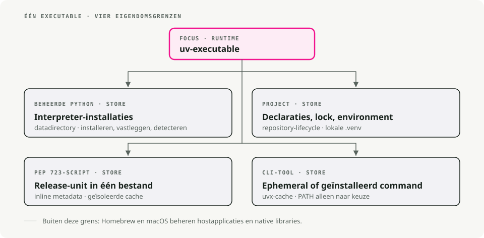
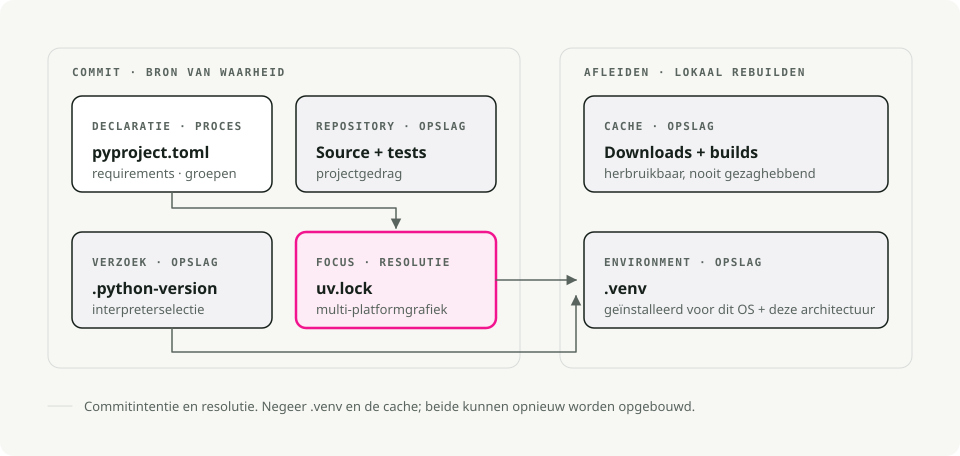
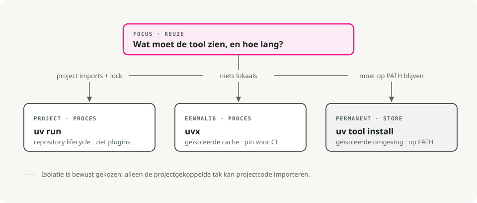
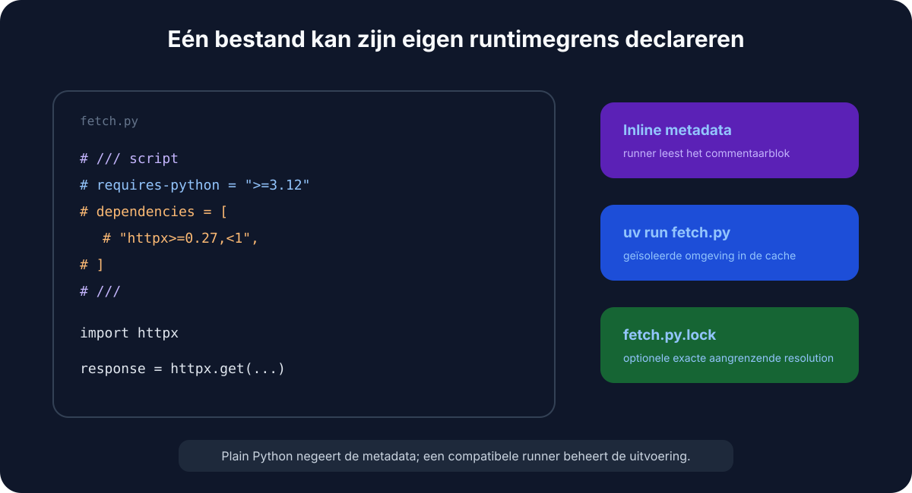

Automatische vertaling
Dit artikel is automatisch vertaald vanuit de oorspronkelijke Engelse versie.
uv op macOS: Python-versies, projecten en tools beheren
Snel starten
# Install uv
brew install uv
# For new projects (modern workflow)
uv init # create project structure
uv add pandas numpy # add dependencies
uv run train.py # run your script
# For existing projects (legacy workflow)
uv venv # create virtual environment
uv pip install -r requirements.txt # install dependencies
uv run train.py # run your script
# Run tools without installing them
uvx ruff check . # run linter
uvx black . # run formatter
# Run a single-file script with its own dependencies (no project needed)
uv run fetch.py # uv reads the inline deps and runs it
Waarom uv gebruiken voor Python op macOS?
Als je al een tijd Python gebruikt, wissel je waarschijnlijk tussen pip, virtualenv, pip-tools, pyenv en poetry afhankelijk van het project. uv doet wat al die tools doen, met één binary.
Het is geschreven in Rust, en op mijn machine installeert het packages grofweg 10-100x sneller dan de oude stack. De grotere winst voor mij is dat ik niet meer midden in een taak tussen tools hoef te schakelen.

Het vervangt pip en pip-tools voor packagebeheer, pyenv voor het installeren van Python-versies, virtualenv/venv voor omgevingen, pipx voor het uitvoeren van tools, en poetry of pdm voor projectworkflows.
uv installeren
De eenvoudigste manier om uv op macOS te installeren is via Homebrew:
brew install uv
uv detecteert automatisch de architectuur van je Mac (Apple Silicon of Intel), dus er is geen extra configuratie nodig.
Om het up-to-date te houden:
brew upgrade uv
# OR
uv self update
Kernconcepten
uv dekt drie use-cases:
- Projecten — een applicatie of library bouwen met afhankelijkheden.
- Scripts — een Python-script in één bestand uitvoeren met inline afhankelijkheden.
- Tools — command-line utilities (zoals
ruffofhttpie) globaal uitvoeren.
1. Projectbeheer
Voor nieuwe projecten gebruikt uv de standaard pyproject.toml voor configuratie en een cross-platform uv.lock voor reproduceerbare builds.

Start een nieuw project:
uv init my-project
cd my-project
Dit maakt een pyproject.toml, een .gitignore en een hello.py aan.
Afhankelijkheden toevoegen:
# Runtime dependencies
uv add pandas requests
# Development dependencies
uv add pytest ruff --dev
Je code uitvoeren:
uv run hello.py
uv beheert de virtuele omgeving in .venv voor je. Je hoeft die niet handmatig te activeren.
2. Python-versies beheren
uv installeert en beheert Python-versies voor je, opgeslagen in ~/.cache/uv. Als je hiervoor pyenv gebruikte, kun je dat laten vallen.
Installeer een specifieke versie:
uv python install 3.12
Pin een versie voor je project:
uv python pin 3.11
Dit schrijft een .python-version-bestand. Bij de volgende uv run gebruikt het de vastgepinde versie en downloadt die indien nodig. Je team en CI komen zo op dezelfde Python-versie uit zonder extra afstemming.
3. Tools uitvoeren met uvx en uv tool install
uvx (een alias voor uv tool run) voert Python command-line tools uit zonder ze toe te voegen aan je globale omgeving of projectafhankelijkheden.
# Run a linter
uvx ruff check .
# Run a formatter
uvx black .
# Start a temporary Jupyter server
uvx --from jupyterlab jupyter lab
Elke tool draait in zijn eigen tijdelijke omgeving, dus er is geen versieconflict met wat je project al geïnstalleerd heeft.

Twee details waar ik voortdurend naar grijp:
- Pin de versie inline met
@:uvx ruff@0.6.0 check ., of forceer de nieuwste metuvx ruff@latest. - Komt de commandonaam niet overeen met het package? Gebruik
--from. Het packagejupyterlablevert het commandojupyter, dus het isuvx --from jupyterlab jupyter lab. Hetzelfde geldt voor--from httpie http. - Een extra afhankelijkheid nodig voor een plugin? Voeg die toe met
--with:uvx --with mkdocs-material mkdocs serve.
Als je een tool elke dag gebruikt, installeer die dan één keer in plaats van telkens een nieuwe omgeving op te zetten:
uv tool install ruff # now `ruff` is on your PATH
uv tool list # see what's installed
uv tool upgrade --all # update everything
uv tool uninstall ruff
Vuistregel: uvx voor eenmalige of CI-runs, uv tool install voor je dagelijkse tools.
Legacy-projecten (requirements.txt)
requirements.txt heeft zijn dienst bewezen. Het is een platte lijst van packages zonder lockfile, zonder scheiding tussen app- en dev-afhankelijkheden, en zonder vastlegging van waarom iets gepind is. Dat is prima tot de dag dat je een build van acht maanden geleden wilt reproduceren en ontdekt dat "pinned" betekende wat PyPI op dat moment toevallig resolve'de.
Als jij eigenaar bent van het project, migreer het dan. uv leest je bestaande lijst direct in een pyproject.toml:
uv init --bare # minimal pyproject.toml, no scaffolding
uv add -r requirements.txt # import runtime dependencies
uv add --dev -r requirements-dev.txt # and dev ones, if you split them
Je hebt nu een pyproject.toml en een echte uv.lock die exacte resolved versies vastlegt. Controleer met uv pip freeze of alles is overgekomen, verwijder de oude requirements.txt en kijk niet meer om.
Maar misschien draai je al sinds Python 3.6 dezelfde requirements.txt en zit je niet te wachten op mijn mening daarover. Prima. uv werkt nog steeds als drop-in vervanging voor pip en venv, zonder migratie:
# Create a virtual environment
uv venv
# Install dependencies
uv pip install -r requirements.txt
# Run it
uv run python app.py
Dezelfde commando's die je al kent, alleen sneller. Niets aan de oude workflow wordt slechter; het is alleen zo dat je die niet meer hoeft te gebruiken.
Single-file scripts met inline afhankelijkheden
Dit is de feature die heeft veranderd hoe ik wegwerp- en glue-code schrijf. Een Python-script kan zijn eigen afhankelijkheden in het bestand declareren, in een commentblok gedefinieerd door PEP 723. Geen pyproject.toml, geen requirements.txt, geen virtuele omgeving om aan te maken — uv run leest het blok, bouwt een gecachte omgeving en voert het bestand uit.
Goed om helder te hebben wat hier het werk doet: dit is geen Python-taalfeature en ook geen uitvinding van uv. Het blok is gewoon een comment, dus gewone python fetch.py negeert het en faalt op de ontbrekende imports. PEP 723 is een gedeelde standaard, dus elke compatibele runner leest hetzelfde blok — pipx run, Hatch en PDM ondersteunen het ook. uv is toevallig de snelste manier om het te gebruiken, daarom gebruikt de rest van deze sectie uv run.

Hier is het complete voorbeeld in één bestand, fetch.py:
# /// script
# requires-python = ">=3.12"
# dependencies = [
# "httpx",
# "rich",
# ]
# ///
import httpx
from rich import print
print(httpx.get("https://api.github.com/repos/astral-sh/uv").json())
Voer het uit:
uv run fetch.py
De eerste run resolved en installeert httpx en rich in een gecachte omgeving; latere runs hergebruiken die en starten direct.
Je hoeft het metadata-blok niet met de hand te schrijven. uv maakt het voor je aan en bewerkt het:
# Create a new script with the block pre-filled
uv init --script fetch.py --python 3.12
# Add or remove dependencies
uv add --script fetch.py httpx rich
uv remove --script fetch.py rich
Voor een snel experiment kun je het blok zelfs helemaal overslaan en afhankelijkheden op de command line meegeven:
uv run --with httpx --with rich fetch.py
Waarom dit ideaal is voor skill- en automatiseringsscripts
Ik gebruik dit voor kleine scripts die geen project verdienen: een eenmalige datafix, een CI-helper, een Claude Code-skill-script, een cron job. Het script is de eenheid. Je kunt het in een gist zetten, committen naar elke repo of aan een teamgenoot geven, en uv run is het enige dat nodig is om het correct uit te voeren.
Maak het direct uitvoerbaar met een shebang:
#!/usr/bin/env -S uv run --script
# /// script
# dependencies = ["httpx"]
# ///
import httpx
...
chmod +x fetch.py
./fetch.py # uv handles the environment behind the scenes
De -S splitst de shebang in aparte argumenten zodat env --script doorgeeft aan uv.
Scripts locken en pinnen
Voor scripts die over maanden nog steeds moeten werken, heb je twee opties.
Lock de exacte resolution naast het script:
uv lock --script fetch.py # writes fetch.py.lock
Of pin een moment in de tijd zodat uv alleen packages meeneemt die vóór een bepaalde datum zijn uitgebracht — handig voor reproduceerbaarheid zonder lockfile:
# /// script
# dependencies = ["httpx"]
# [tool.uv]
# exclude-newer = "2025-04-17T00:00:00Z"
# ///
Tips en trucs die de moeite waard zijn
Nog een paar dingen die ik regelmatig gebruik en die niet direct duidelijk zijn uit de quick start.
Sync vanuit de lockfile in CI. uv sync installeert exact wat in uv.lock staat. Voeg --frozen toe om hard te falen als de lockfile verouderd is in plaats van stilletjes opnieuw te resolven — precies wat je wilt in CI en Docker-builds.
uv sync --frozen
Groepeer je dev-afhankelijkheden. Naast --dev kun je benoemde dependency groups definiëren in pyproject.toml (docs, lint, test) en alleen synchroniseren wat je nodig hebt:
uv add --group docs mkdocs-material
uv sync --only-group docs
Inspecteer de dependency tree. uv tree laat zien wat wat heeft binnengetrokken — en --outdated markeert upgrades:
uv tree
uv tree --outdated
Exporteer naar requirements.txt wanneer een downstream tool er nog steeds een verwacht:
uv export --format requirements-txt > requirements.txt
Draai een eenmalige Python met extra packages, geen project nodig:
uv run --with pandas --with matplotlib python
Beheer de cache wanneer de schijfruimte krap wordt of een build ontspoort:
uv cache clean # wipe the whole cache
uv cache prune # remove only unused entries
Waarom het snel is
Drie dingen zijn hier belangrijk. Het is geschreven in Rust, dus er is geen Python startup-overhead bij elke aanroep. Het cachet gebouwde wheels globaal — zodra numpy in één project is geïnstalleerd, is het installeren in een ander project vrijwel direct klaar (op macOS gebruikt het copy-on-write links). En het downloadt en installeert packages parallel in plaats van één voor één.
Samenvatting
| Taak | Oude manier | De uv-manier |
|---|---|---|
| Install Python | pyenv install 3.12 |
uv python install 3.12 |
| New project | mkdir proj && cd proj && python -m venv .venv |
uv init proj |
| Install package | pip install pandas && pip freeze > requirements.txt |
uv add pandas |
| Run script | source .venv/bin/activate && python script.py |
uv run script.py |
| Script + deps | een project, of een handmatige venv alleen voor één bestand | inline PEP 723-blok + uv run |
| Run tool once | pipx run black |
uvx black |
| Install a tool | pipx install ruff |
uv tool install ruff |
| Reproducible CI | pip install -r requirements.txt |
uv sync --frozen |
Ik ben kort na de release overgestapt op uv voor mijn Python-workflow en ben niet meer teruggegaan. Als je nog op de oude stack zit, probeer het dan eens in je volgende project — zo heb ik het ook getest voordat ik alles heb overgezet.